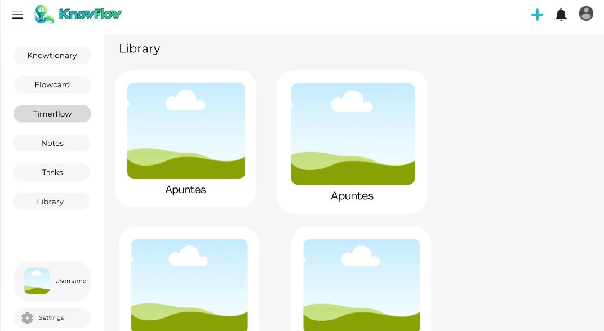
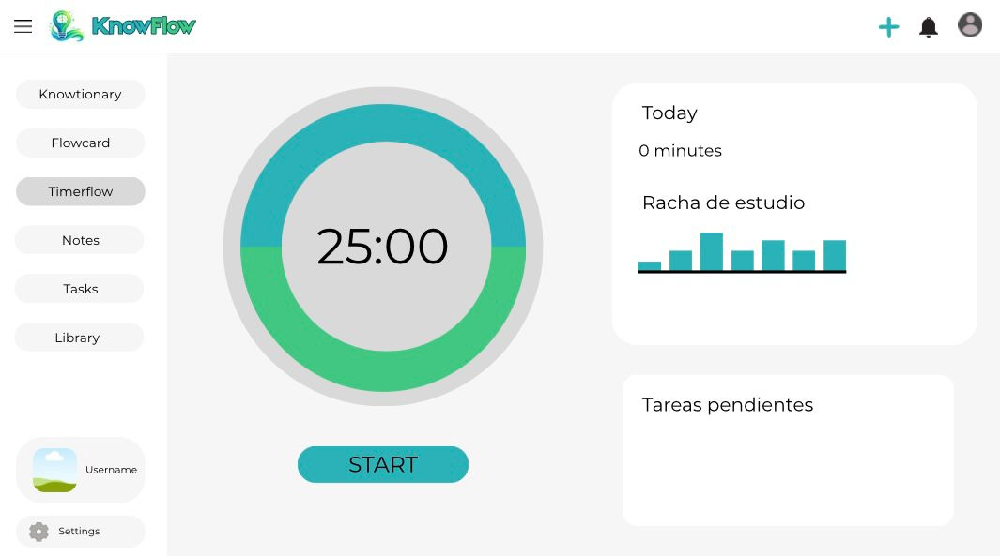

Prototipado y Diseño de Interfaz¶
En esta sección se muestran los primeros diseños e ideas visuales que sirvieron como punto de partida para el desarrollo de la interfaz de usuario de KnowFlow.
1. Bocetos y Concepto Inicial del Proyecto¶
Durante las primeras fases de planificación, realizamos maquetas gráficas (wireframes) para plasmar la estética, distribución y estructura de pantallas que queríamos para la aplicación. El objetivo principal era visualizar de qué manera se organizarían los diferentes paneles de estudio y las librerías dentro del espacio de trabajo del alumno.
A continuación se muestran los dos bocetos iniciales que definieron el concepto original de la plataforma:
Primer Boceto: Vista de Organización y Carpetas¶
En este primer prototipo conceptual, diseñamos la distribución del menú lateral y la pantalla de visualización de contenidos y carpetas de estudio, buscando una interfaz compacta y modular.

Segundo Boceto: Detalle de Herramientas de Estudio y Flujo¶
En esta segunda maqueta, se definió la disposición interna de las tarjetas y el área de trabajo del estudiante a la hora de repasar el temario o gestionar sus notas.

2. Evolución del Diseño con el Tiempo¶
Como es habitual en el desarrollo de software y en el diseño de experiencia de usuario (UX/UI), el diseño original propuesto en estas imágenes ha ido cambiando y evolucionando de manera notable a lo largo de los meses de desarrollo del proyecto:
- Simplificación y Limpieza Visual: La estética original que teníamos en mente presentaba una interfaz algo más recargada. Durante la programación de la web, optamos por simplificar los bordes, ampliar el espaciado y utilizar tipografías más legibles (como la fuente Inter) para evitar el cansancio mental del estudiante.
- Adaptación al Modo Oscuro: El diseño final ha incorporado una paleta de colores sofisticada con soporte completo para Modo Claro y Modo Oscuro, algo que no estaba tan detallado en las primeras maquetas en papel y digital.
- Evolución del Menú y del Dashboard: La barra de navegación lateral y el panel de estadísticas diarias se rediseñaron para ser completamente dinámicos y responsivos, adaptándose automáticamente a pantallas de móviles y tablets, algo que requirió refactorizar la estructura de rejilla (grid) planteada originalmente.
En conclusión, aunque los bocetos originales sirvieron como una guía indispensable para arrancar y estructurar los módulos de la aplicación, el resultado final en producción de KnowFlow es una versión mucho más madura, limpia, moderna y cómoda para el usuario.